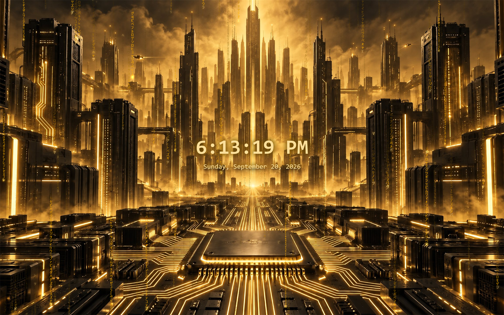
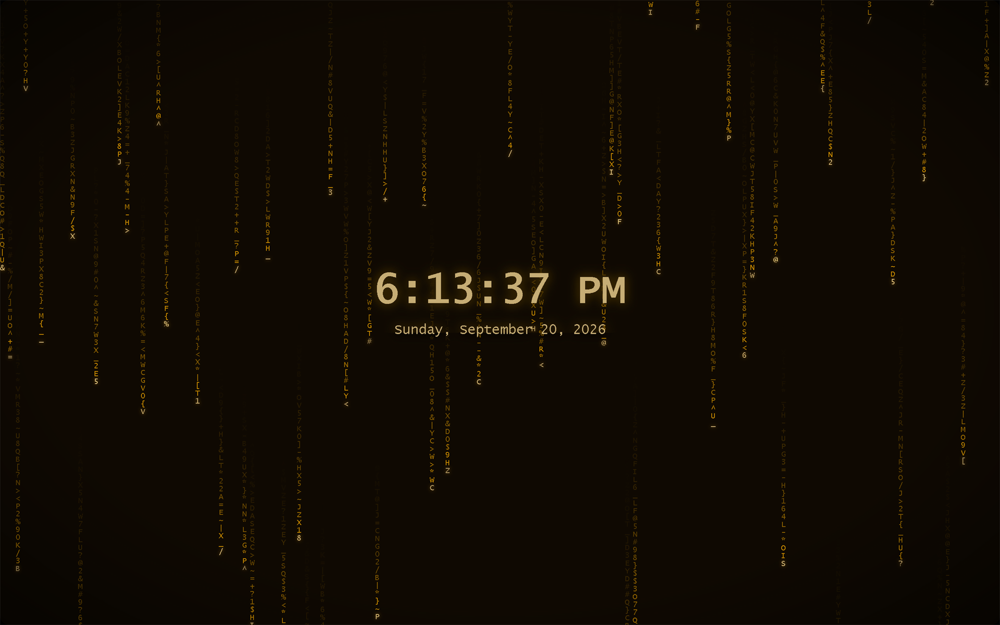
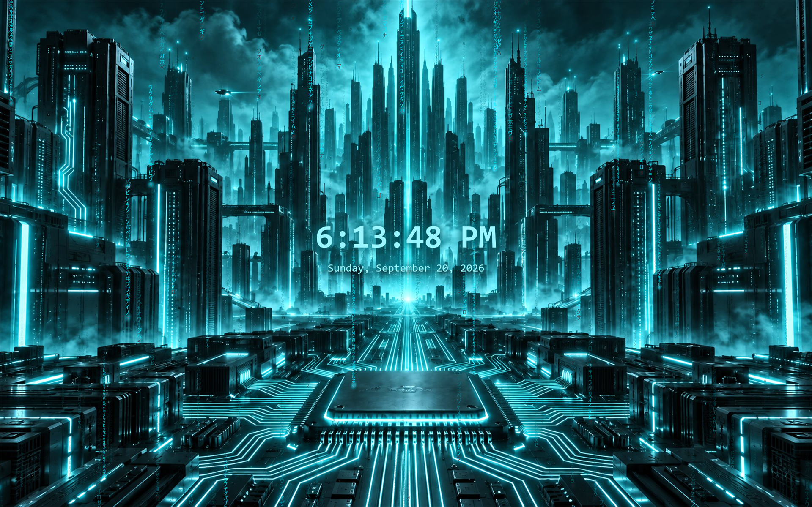
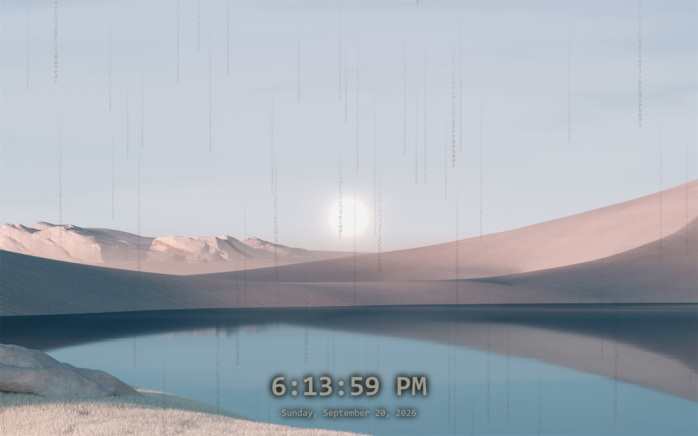
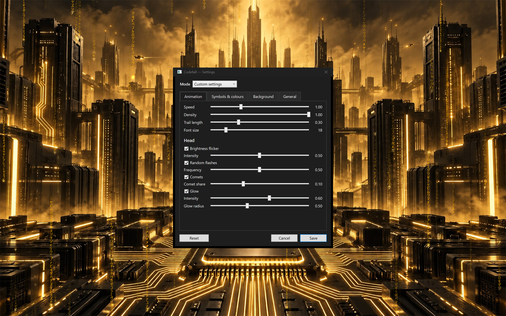

Four looks, one switch
City
Bundled night-city artwork in eleven tints — one picture or a slow carousel; the rain takes its colour from the image.
Retro terminal
Green, amber or white phosphor, pixel glyphs, scanlines and a curved CRT vignette.
Photo frame
Your own photos from any folder, shown whole and unstretched, with a soft rain overlay or none at all.
Custom
Every dial: symbol set, font, speed, density, trail length, colours, glow, flashes, comets, background and tint cycling.
Screenshots





Details
- Clock and date in your language, rendered over the rain.
- Interface in 10 languages: English, Русский, 中文, हिन्दी, Español, Français, العربية, বাংলা, Português, اردو.
- GPU rendering (Direct2D); idle CPU under 1 %.
- No network, no accounts, no telemetry — see the privacy policy.
- Windows 10 version 2004 or later, 64-bit.
How it works after installing from the Store
Open Codefall once from the Start menu: it registers itself as your screen saver and opens the Windows screen saver dialog, where you can preview it and change settings. Updates arrive through the Store automatically.